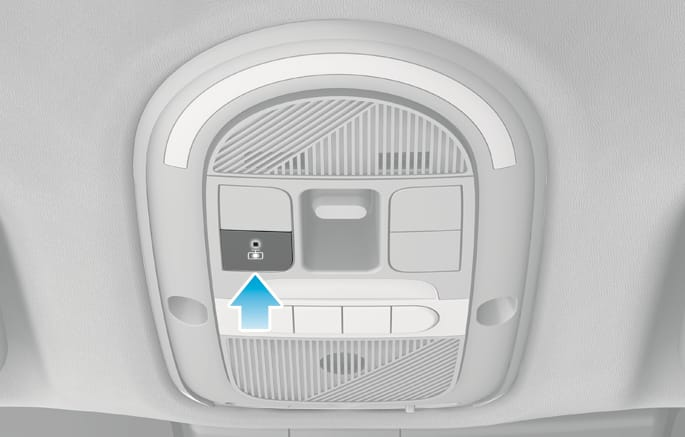

수동으로 녹화하기

2C_BuiltInCamButton
차량 주행 중, 또는 시동 'ACC' 또는 'ON' 상태일 때 수동 녹화 버튼을 누르면 해당 시점의 전후 상황을 이벤트 녹화 또는 타임랩스 녹화 영상으로 저장할 수 있습니다.
-
이벤트 녹화: 수동 녹화 버튼을 짧게 누르십시오.
-
타임랩스 녹화: 수동 녹화 버튼을 길게 누르십시오.
-
수동 녹화 기능은 빌트인 캠의 녹화 설정과 관계없이 작동합니다.
-
'타임랩스'란 일정 간격으로 영상을 녹화 후 압축해 긴 시간 동안의 변화를 고속으로 재생하는 기능입니다.
-
타임랩스 녹화 중 수동 녹화 버튼을 길게 누르면 녹화가 종료됩니다.
-
수동 녹화 중 시동을 끄거나 빌트인 캠 메뉴를 선택하면 녹화가 종료됩니다.
빌트인 캠 작동 상태 확인하기
빌트인 캠의 수동 녹화 버튼과 전방/후방 카메라의 표시등을 통해 빌트인 캠 작동 상태를 확인할 수 있습니다.
|
표시등 |
설명 |
|
꺼짐 |
주행/주차 중 상시/이벤트 녹화 미설정 |
|
깜빡임(2초 주기) |
주행/주차 중 상시/이벤트 녹화 설정 완료 |
|
깜빡임(1초 주기) |
충격 감지 이벤트 녹화 중 |
|
깜빡임(1초 주기) |
수동 녹화 중 |
|
깜빡임(2초 주기) |
타임랩스 녹화 중 |